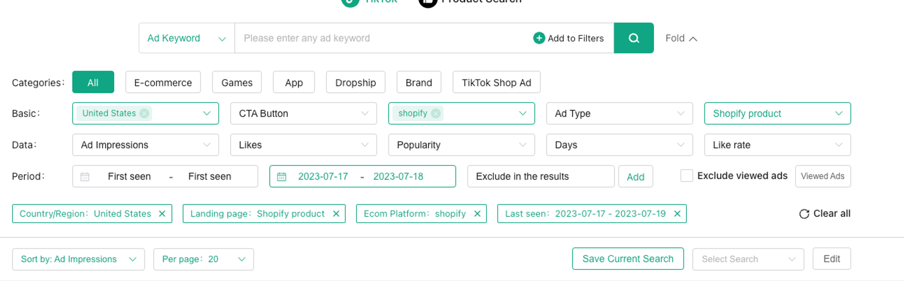
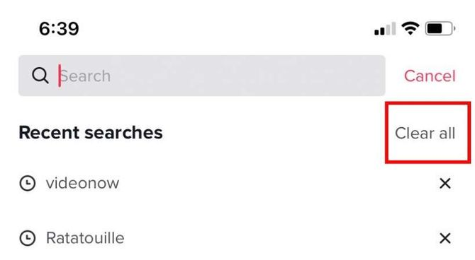

PiPi Ads Settings + Winning Video SOP
PiPi Ads Settings SOP
First, I suggest using MineA instead… it’s a lot cheaper.

Country: USA
Platform: Shopify
Landing Page: Shopify Product
Last seen: Last 2-3 days
Sort by: Impressions
Next:
- click on ads
- Open advertiser profile
- check how long they have been running for
-
if they have been running for less than 3 months and still running,
Copy URL and paste into shophunter.io
- check if sales are consistently over $2,000/day and growing
-
For beginners, I wouldn’t go for products that are being dominated
already… $25k/day or more. These companies are usually experienced
people like me and have invested way more time and capital into their
creative flywheel and branding.
Now check the SOP below 👇
Winning Video Research SOP
This procedure is a rinse and repeat strategy to find viral content
ideas for your Creators and Editors to trace and build ideas off of.
This is a data driven technique that will train your mind to start
producing viral ideas along side finding already proven viral ideas
that you can backpack off of others who already verified the idea
through their posts.
Ideally, this strategy will make it possible for any individual
(talented or untalented) to produce viral video concepts.
Step 1
-
Ideally, this strategy will make it possible for any individual
(talented or untalented) to produce viral video concepts.
-
Ideally, this strategy will make it possible for any individual
(talented or untalented) to produce viral video concepts.
- Niche
-
5-10 competitors
-
If there aren’t enough direct competitors, list secondary
competitors (List other brands with a similar product or
similar niche)
-
List their website, social accounts, best examples of organic
marketing
-
Find highest performing videos that can correlate with their
brand/product
- List all product selling points
-
List all product information
- Brand info, shipping, reviews, updates etc…
Step 2
Create a brand new:
💡 Creating these fresh accounts allows you to train them from the
ground up by forcing the algorithm to only send you content that
contribute to You or your Clients niche, and personality.
Step 3
Create/identify your target profile:
💡 Creating these fresh accounts allows you to train them from the
ground up by forcing the algorithm to only send you content that
contribute to You or your Clients niche, and personality.
Write out as many keywords, interests, hashtags that contribute to your
chosen niche, client, personality.
Keep note, don’t just think of direct keywords/interests/hashtags…
Think of similar niches or personas that can also bring similar ideas to
your direct niche.
ex
- sleep remedies
- sleep insomnia
- natural sleep remedies
- vitamin d and sleep
- #sleepmask
- #fitness
- #depression
- #anxiety
- entrepreneur
- personal development
- transformation
- transformation
- #comeup
- fitness
- startup
- small business
- body transformation
- business idea
- e-commerce
- dropshipping
- amazon fba
Step 4
💡 Start training your accounts, start with TIKTOK
1. Login to your TikTok account and navigate to the search bar

💡 Tap the top right filter button and select “most liked” and first
time frame that is selected by default.
-
Scroll through the results and tap the most viral videos that pop up
-
open them then like, comment and copy the link
-
Only save the link to your idea sheet if its an idea that
can work with your profile. If it isn’t an idea that can be
used still continue with copy the link to trigger the
algorithm to think you wanted to save or share the content.
-
repeat this process through as many videos as you can scroll through
- also repeat this process through all the time frame filters
-
build up your list of ideas on your notes with copied video links
-
Don’t forget to also follow accounts that you think can bring more
viral video ideas to your attention in the future. this also
triggers the algorithm to send more similar accounts and videos your
way on the FYP
Repeat this process for all of the keywords you’ve written down in STEP
2
Once you run out of keywords, go through them again and toggle the
caption of these viral videos and look for more hashtags or phrases to
add to your keyword arsenal to dig deeper into your research.
Step 5
💡 Scroll FYP (for you page) 15-30mins per day
-
Keep you eyes out for any viral videos that pop up as you scroll
-
like, comment and repeat copy link process from STEP 3
-
Repeat saving good videos and searching for new phrases/hashtags
you can add to your arsenal.
-
If any videos that don’t contribute to your research like completely
unnecessary niches or types, tap share button and select “not
interested”
-
This will trigger the algo to recognize what videos you don’t
want to see in the future
-
Keep note, don’t be too strict with this because some
outside niches can still bring potential viral ideas you can
use to your advantage.
ex. click not interested on videos of girls dancing if your
niche is the complete opposite.
But, if its something like a podcast in a different niche or
before and after transformation or hook that can be used as
inspo to slap your niche content on top don’t select “not
interested”
Step 6
💡 Repeat processes in Step 2 - Step 4 until you have 2x-3x the amount of content ideas for your profile to post 2-3 times per day for a week straight.
Step 7
💡 Repeat this whole process now with:
- Instagram reels
-
YT Shorts
Step 8
Distribute these ideas to your selected Creator and editors
-
I suggest setting up Slack channels, or a Discord, or a Circle Community to distribute these ideas.